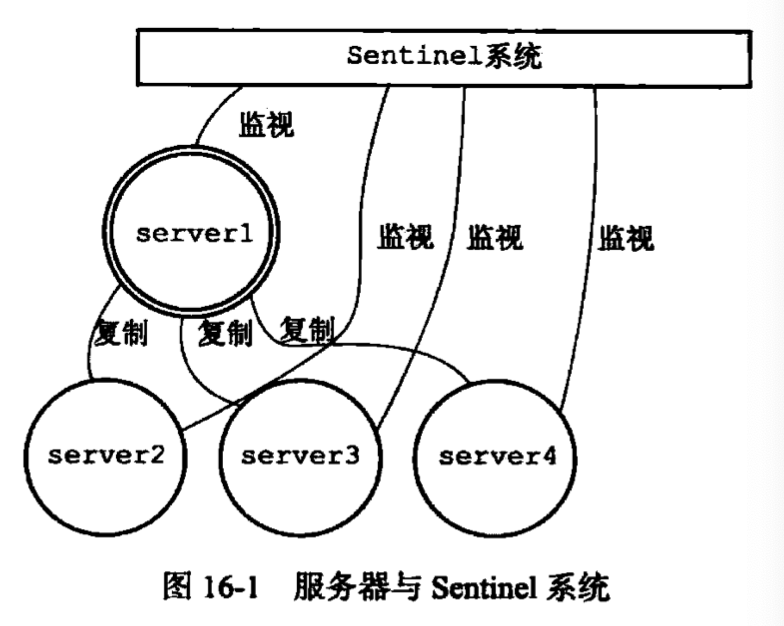

Sentinel哨兵，是Redis的高可用解决方案，由一个或多个Sentinel实例组成Sentinel系统，监控任意多个主服务器和从服务器，主服务器下线时自动将其下的从服务器升级成新的主服务器。
Sentinel介绍

Sentinel是一个运行在特殊模式下的Redis服务器，只是它不使用数据库，不会启动时载入RDB或者AOF文件，它有自己的命令。
Sentinel状态的masters字典中记录了所有被Sentinel监控的主服务器信息，字典中的每一项就是一个被监视的Redis服务器实例。
Sentinel初始化的时候会向被监视的主服务器创建两个连接：
- 命令连接，专门用于向主服务器发送命令，并接受命令回复。
- 订阅连接，专门订阅主服务器的
__sentinel__:hello频道。
获取主服务器信息
Sentinel默认10秒一次，通过命令向被监视的主服务器发送INFO命令，通过回复获取主服务器信息，这些信息也包括了从服务器相关信息。Sentinel会将这些信息缓存起来。
获取从服务器信息
Sentinel发现主服务器有新的从服务器出现，会创建新的实例结构在缓存中，还会创建到这个从服务器的命令连接和订阅连接。
Sentinel默认10秒一次，向从服务器发送INFO命令获取从服务器信息，并更新缓存的实例信息。
向主从服务器发送信息
Sentinel默认2秒会通过命令连接想所有被监视的主服务器和从服务器发送命令：
1 | PUBLISH __sentinel__:hello "<s_ip>,<s_port>,<s_runid>,<s_epoch>,<m_name>,<m_ip>,<m_port>,<m_epoch>" |
- s开头的是Sentinel本身信息
- m开头的是主服务器信息，如果Sentinel监控的是主服务器，这些就是主服务器信息；如果监控的是从服务器，这些就是从服务器对应的主服务器的信息
接收来主从服务器的频道信息
Sentinel与主从服务器建立订阅连接后，会订阅频道：
1 | SUBSCRIBE __sentinel__:hello |
Sentinel会向服务器的__sentinel__:hello频道发消息，也会订阅服务器的__sentinel__:hello频道接收消息。
Sentinel之间通过这些信息相互感知。
Sentinel的sentinels字典除了保存自己本身之外，还保存同样监视这个主服务器的其他的Sentinel信息。Sentinel通过频道信息发现了新的Sentinel时，会更新sentinels字典，还会创建一个命令连接到新的Sentinel。
Sentinel之间也是相互连接的。
检测主观下线状态
Sentinel每一秒都会想所有与他建立了命令连接的实例：主服务器、从服务器、其他Sentinel发送PING命令，并通过返回的信息判断实例是否在线。
检测客观下线状态
当Sentinel将一个主服务器判断为主观下线后，为了确认是否是真的下线，它会向其他也监视这个主服务器的Sentinel询问，其他的Sentinel如果有足够多的数量说已经下线，则就会判定该服务器为客观下线，并对主服务器执行故障转移操作。
选举Sentinel Leader
当一个主服务器被判断为客观下线，监视这个主服务器的所有Sentinel会进行协商，选出一个Sentinel Leader，这个Leader会对下线的主服务器进行故障转移。
选举算法是Raft。
故障转移
选出Sentinel Leader后，该Leader会对已下线的主服务器进行故障转移操作：
- 会在已下线的主服务器的从服务器中选一个作为主服务器，向被选中的从服务器发送：
SLAVEOF no one - 让其他的从服务器成为新的主服务器的从服务器，通过发送命令
SLAVEOF来实现 - 让已下线的主服务器变成新的主服务器的从服务器，等待重新上线后使用。
参考
- 《redis设计与实现》（第二版）